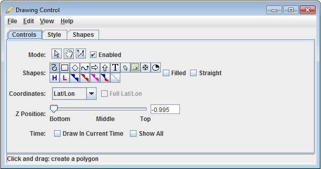
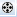

A caveat: drawing and selecting in 3D is at times tricky. Sometimes it is best to be in the main overhead view.
The user interface consists of three tabs. The first allows for the user to set the drawing mode:

The second sets the drawing style:

And the third lists all of the graphical elements:

Double clicking on an element will show its properties editor through which you can change its color, line width, position, etc.

Image 1: Shape Properties
Note: The drawing control will only respond to events (e.g., mouse drag to draw) when its window is being show. For example, if it is not visible in the Data Explorer tab then no drawing will take place.
The distance and area of a shape will be shown when it is being drawn, in the Shapes list and in the shape properties. You can change the distance unit through the Edit->Change Display Unit... menu.
- Mode
There are three editing modes, select, move and reshape:
-
 Allows you to select one or more drawing
objects. To select multiples press the control key. The selected objects
will be shown with small magenta rectangles. Once selected you can bring
up the object's property editor by pressing Control-P. You can also delete
the selected objects by pressing Control-X. You can select all of the
objects by pressing Control-A.
Allows you to select one or more drawing
objects. To select multiples press the control key. The selected objects
will be shown with small magenta rectangles. Once selected you can bring
up the object's property editor by pressing Control-P. You can also delete
the selected objects by pressing Control-X. You can select all of the
objects by pressing Control-A.
A caveat: Some objects can only be selected by clicking on or near certain points. Rectangles and diamonds click near the upper left or lower right. For text click near the beginning of the text string for left justified text, near the center for center justified text or near the end for right justified text.
-
 Allows you to move an object.
Allows you to move an object. -
 Allows you to move one of the points
that define the location of an object.
Allows you to move one of the points
that define the location of an object.
-
- Enabled
This checkbox allows you to disable/enable drawing. For example, if you wanted to manipulate other elements in the display (e.g., probe point, cross section, other drawing controls), you can disable the drawing control so that it does not respond to any mouse events in the main display.
- Shapes
The shape buttons allow you to create:
-
 Click and drag in the main display
to create a smooth polygon. Check the Straight checkbox, then click and drag to create a straight line polygon.
Click and drag in the main display
to create a smooth polygon. Check the Straight checkbox, then click and drag to create a straight line polygon.  ,
,  Click
and drag in the main display to create the shape.
Click
and drag in the main display to create the shape.-
 Click in the main display and type to
enter text. When done entering text hit
Click in the main display and type to
enter text. When done entering text hit -
 Click in the main display to create
a waypoint - text and a shape.
Click in the main display to create
a waypoint - text and a shape. -
 Click in the main display to create
an image. Select an image file from the file chooser. Note: drawing with
the image is a bit flaky. The Full Lat/Lon button
controls how the corners of the image are positioned.
Click in the main display to create
an image. Select an image file from the file chooser. Note: drawing with
the image is a bit flaky. The Full Lat/Lon button
controls how the corners of the image are positioned. -  Click in the main display to create a movie. Select a movie file from the file chooser. Note: drawing with the movie is a bit flaky.
-
 Click in the main display to create
a symbol.
Click in the main display to create
a symbol. - Fronts - The drawing control also supports drawing a number of front and high/low symbols:
 Click in the main
display to create a high pressure symbol.
Click in the main
display to create a high pressure symbol.- Click in the main display to create a low pressure symbol.
 Click and drag
in the main display to create a cold front.
Click and drag
in the main display to create a cold front.- Click and drag in the main display to create a warm front.
 Click and
drag in the main display to create an occluded front.
Click and
drag in the main display to create an occluded front.  Click and
drag in the main display to create a stationary front.
Click and
drag in the main display to create a stationary front.  Click and drag
in the main display to create a trough.
Click and drag
in the main display to create a trough.
While the icon buttons only allow you to draw 5 different front types, there are 20+ front types to choose from in the Properties dialog for the shape.
-
- Location
The drawing control allows you to draw in four different coordinate systems:
- Lat/Lon/Alt - The points of the shapes are defined by Latitude/Longitude/Altitude. When you reproject the display the shape will also be reprojected.
- Lat/Lon - Like Lat/Lon/Alt but the z position is fixed using the Z Position slider.
- X/Y/Z - Draw in the 3D box coordinate space. Re-projections will no effect the shape.
- X/Y - Like X/Y/Z but the z position is fixed.
For now the Full Lat/Lon is not fully implemented.
- Z Position
Allows you to define what is the fixed Z position.
- Time
If you have the Draw in current time checkbox turned on then the graphic shapes that that you are drawing will only be shown in the current animation time in the 3D view. This facility allows you to, for example, annotate features through time by drawing on the feature, stepping the time animation, and then drawing in the next time. To see all of the objects irrespective of their display times select the Show all checkbox.
A graphic can be shown in more than one times using the property editor. Select the object and press Control-P to bring up the property editor. Select the times to be displayed in in the Times list (Shift-click or Control-click to select multiples) and press Apply or Ok.
- Color, Line Width, etc.
These widgets allow you to define the color, line width, font, and text justification.
- Edit Menu
There is a "Remove All" entry in the edit menu that removes all graphic objects from the display.
- File Menu
Under the file menu you can choose to export the objects in the drawing control. This creates a simple xml file (a .xgrf file suffix) that defines the objects and that can be re-imported.